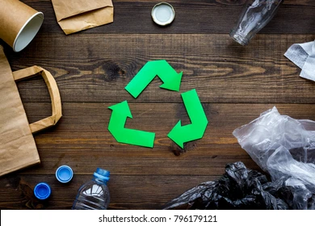

WEALTH FROM WASTE

RECYCLE
Recycling (and composting) This enables the materials you throw away to be used again by making them into new products.
The best way to manage waste is to not produce it. This can be done by shopping carefully and being aware of a few guidelines:
Buy products in bulk. Larger, economy-size products or ones in concentrated form use less packaging and usually cost less per ounce.
Avoid over-packaged goods, especially ones packed with several materials such as foil, paper, and plastic. They are difficult to recycle, plus you pay more for the package.
Consider purchasing recycled materials at work when purchasing material for office supply, office equipment or manufacturing.
Speak to store managers and ask for products and packaging that help cut down on waste, such as recycled products and products that are not over packaged.
Buy products made from material that is collected for recycling in your community.
Use recycled paper for letterhead, copier paper and newsletters.